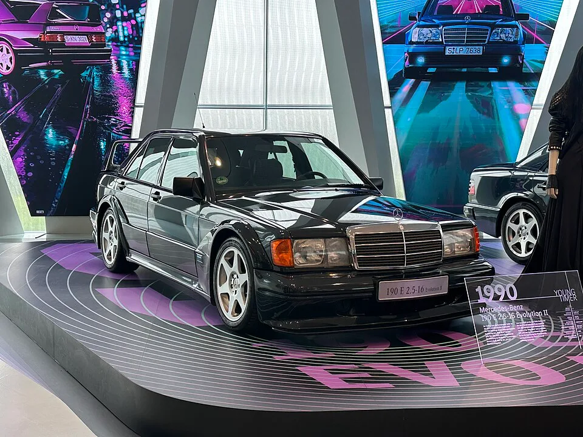
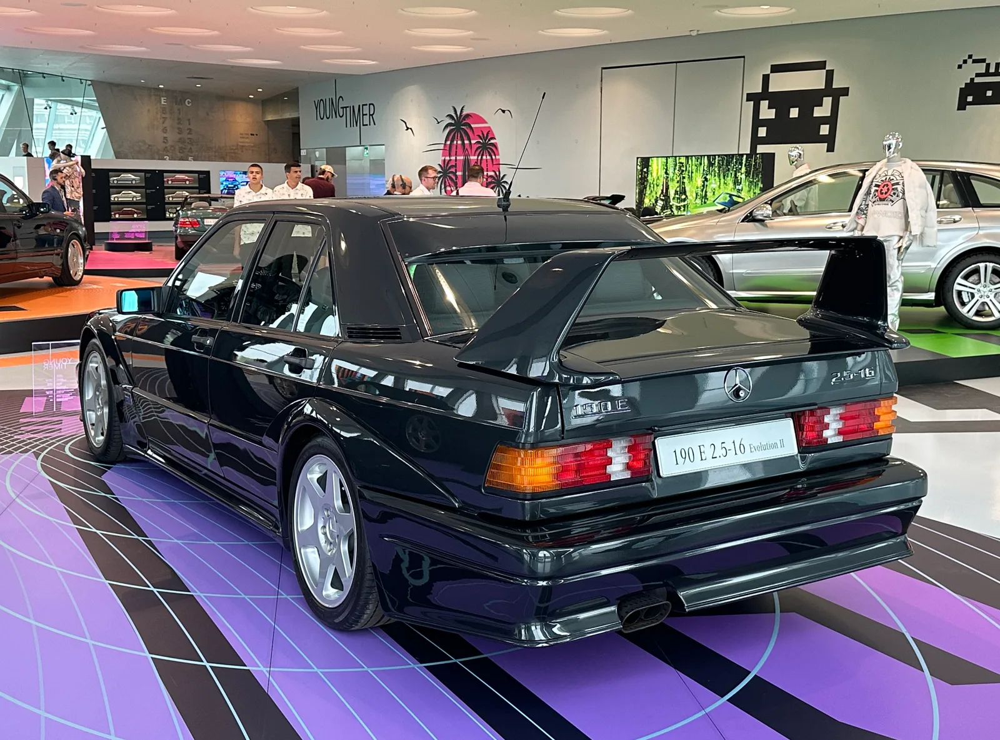
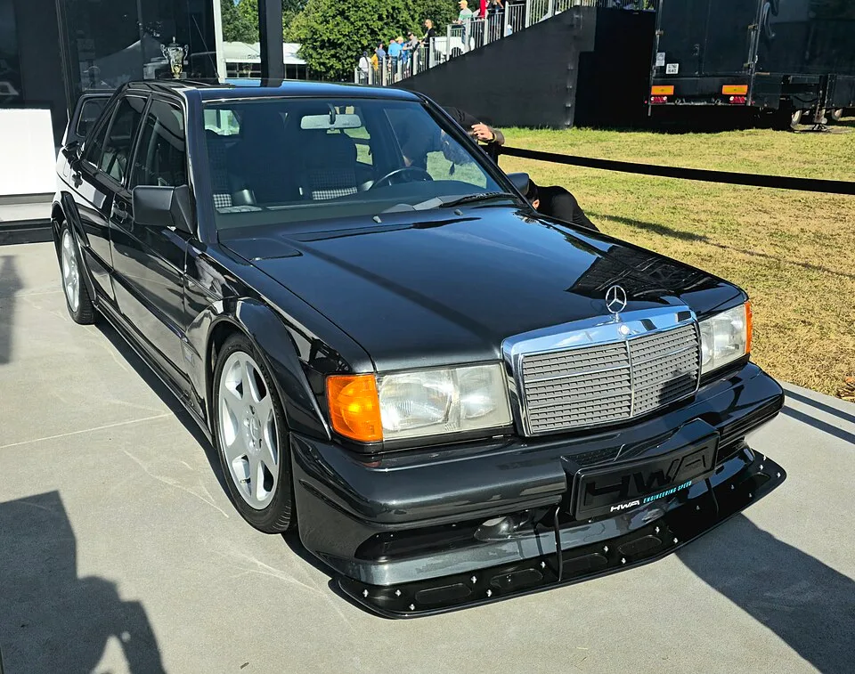
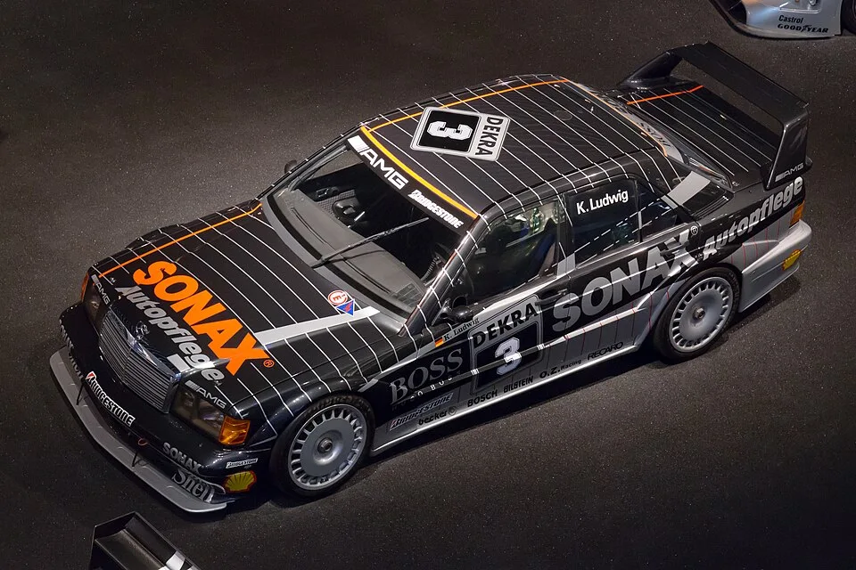

▲ 메르세데스-벤츠 박물관에 전시된 190E 2.5-16 에볼루션 II. 진품 502대 중 한 대가 신형 복원개조차보다 저렴하게 경매에 나왔다 ⓒ Wikimedia Commons
10억 원대 신형 복원개조차와 4억 원대 진짜 클래식카, 둘 중 무엇을 사겠는가. 얼핏 당연히 오리지널이 더 비쌀 것 같지만, 지금 시장에서는 정반대 상황이 벌어지고 있다.
구 AMG 모터스포츠 부문에서 출발한 튜너 HWA가 메르세데스-벤츠 190E를 바탕으로 만든 복원개조차 'HWA EVO'는 대당 약 76만 달러(유로화 기준 약 71만 4,000유로, 원화 환산 약 10억 원대)에 고객 인도를 시작했다. 그런데 같은 시기 경매 플랫폼 브링어트레일러(Bring a Trailer)에는 진짜 1990년식 190E 2.5-16 에볼루션 II가 40만 달러대에 낙찰을 앞두고 있다. 신형 튜닝카가 진품 클래식카보다 오히려 비싼, 흥미로운 가격 역전 현상이다.
1. HWA는 누구인가 — '전직 AMG'가 만든 복원개조차
HWA라는 이름은 낯설어도, 그 뿌리는 낯설지 않다. HWA는 1967년 AMG를 공동 창립한 한스 베르너 아우프레히트(Hans Werner Aufrecht)의 이니셜을 딴 회사다. 1999년 다임러크라이슬러가 AMG 지분 대부분을 인수하면서, AMG의 모터스포츠 부문과 일부 커스텀 차량 제작 사업이 분리돼 HWA로 새로 출범했다.
이후 HWA는 2000년 출범한 독일투어링카마스터스(DTM)에서 메르세데스-AMG의 공식 워크스 팀으로 활동하며 DTM 역사상 가장 많은 우승을 거둔 팀으로 자리 잡았다. 즉 HWA EVO는 취미로 뛰어든 애프터마켓 튜너가 아니라, 메르세데스 레이싱 헤리티지의 직계 후손격 회사가 만든 공식적인 복원개조차인 셈이다.
📍 AMG와는 다른 길을 걸은 회사
AMG가 메르세데스-벤츠 산하 브랜드로 흡수된 반면, HWA는 독립 법인으로 남아 모터스포츠 엔지니어링, 레이스카 제작, 소량 생산 프로젝트를 이어왔다. 190E 복원개조차 프로젝트는 이런 HWA가 자사 헤리티지를 상업화한 대표 사례로 꼽힌다.
2. HWA EVO, 겉모습은 190E지만 속은 완전히 새 차
HWA EVO는 실제 W201 바디셸을 기반으로 하되, 사실상 모든 부품을 새로 설계했다. 강화된 섀시에 새 프런트·리어 서브프레임을 달고, KW 어저스터블 댐퍼를 적용한 전용 서스펜션을 얹었다. 외장 패널은 무게를 줄이기 위해 카본 파이버로 다시 제작됐다.
| 구분 | HWA EVO (신형 복원개조차) | 190E 2.5-16 에볼루션 II (오리지널) |
|---|---|---|
| 생산 연도 | 2020년대 후반, 현재 고객 인도 중 | 1990년 |
| 엔진 | 3.0L 터보차저 V6 | 2.5L 자연흡기 직렬 4기통 (코스워스 설계) |
| 출력 | 444마력(업그레이드 시 493마력) | 232마력 |
| 변속기 | 6단 수동, 후륜구동 | 게트락(Getrag) 5단 수동, 후륜구동 |
| 공차중량 | 약 1,350kg | 약 1,340kg (오리지널 기준) |
| 생산 대수 | 전 세계 100대 한정 | 전 세계 502대 (전체 생산분) |
| 가격대 | 약 76만 달러부터 | 경매 시세 40만~43만 달러대 |

▲ 오리지널 에볼루션 II의 상징인 커다란 리어 스포일러. 공기역학 실험을 위해 만들어진 이 요소가 지금은 클래식카 시장에서 가치를 더하는 요소가 됐다 ⓒ Wikimedia Commons
HWA EVO 프로젝트의 세부 기술 사양은 카버즈(Carbuzz) 기사에서 확인할 수 있다. HWA EVO 기술 사양 바로가기
3. 진짜 에볼루션 II — DTM 우승을 위해 태어난 502대
190E 2.5-16 에볼루션 II는 취미로 만든 차가 아니다. 1990년 DTM(당시 독일투어링카선수권)에 출전하려면 규정상 일정 대수 이상을 양산해야 하는 호몰로게이션(homologation) 규정을 충족해야 했다. 메르세데스-벤츠는 이 규정을 만족시키기 위해 정확히 502대의 에볼루션 II를 생산했고, 이 차는 이후 DTM에서 우승컵을 들어올리는 발판이 됐다.
✅ 에볼루션 II를 특별하게 만드는 요소
· 코스워스가 설계한 2.5L 자연흡기 4기통 엔진 — 16밸브 헤드로 232마력 발휘
· 앞뒤로 과감하게 부풀린 휠 아치와 사이드 스커트, 대형 리어 스포일러 — 실제 공기역학 테스트를 거친 레이싱 파츠
· 전 세계 502대 한정 생산으로, 현재 상태 좋은 개체는 경매 시장에서도 손에 꼽힘
· 이번에 브링어트레일러 경매에 나온 개체는 주행거리 약 5만 8,735km, '블루블랙 메탈릭' 도장, 상태 '우수'로 소개됨
경매에 나온 이 차량(개체번호 401)은 원래 일본에서 판매됐던 개체로, 2022년 중반 42만 5,000달러에 거래된 이력이 있다. 이번 경매는 2026년 9월 24일 마감 예정으로, 낙찰가가 40만 달러를 넘어선 상태다.

▲ 2024년 굿우드 페스티벌 오브 스피드에서 공개된 HWA EVO. 카본 파이버 차체와 대형 프런트 스플리터, 현대적 휠이 오리지널 190E 2.5-16과의 차이를 보여준다. 번호판 프레임의 'HWA ENGINEERING SPEED' 문구가 제작사를 알려준다 ⓒ Wikimedia Commons
4. 왜 '복원개조차'가 오리지널보다 비싸질 수 있나 — 레스토모드 열풍
클래식카 애호가들 사이에서 '레스토모드(restomod)'는 이제 하나의 카테고리로 자리 잡았다. 오리지널 클래식카의 외형과 감성은 그대로 두되, 엔진·서스펜션·안전장비·전자장비를 현대적으로 통째로 갈아 끼우는 방식이다.
📍 오리지널의 낭만 vs 복원개조차의 실용성
1990년식 오리지널 에볼루션 II를 실제로 매일 몰기는 쉽지 않다. 부품 수급이 어렵고, 안전장비는 30여 년 전 기준이며, 232마력 엔진은 현대 기준으로는 평범한 수준이다. 반면 HWA EVO 같은 복원개조차는 겉모습은 그대로 유지하면서 제동력, 서스펜션, 출력을 모두 현대차 수준으로 끌어올려 '보기엔 클래식, 타보면 신차'인 경험을 제공한다. 이 프리미엄이 가격에 고스란히 반영된다.
이런 흐름을 대표하는 회사가 포르쉐 911을 재해석하는 싱어 비히클 디자인(Singer Vehicle Design)이다. 공랭식 911(964 플랫폼)을 바탕으로 차체를 통째로 재제작하고, 최고 500마력에 달하는 자연흡기 플랫6 엔진을 얹는 방식으로 유명하며, 완성차 가격은 대당 수십만~200만 달러에 이른다. 랜드로버 디펜더 역시 ECD 오토모티브 디자인, 아르코닉(Arkonik) 등 여러 업체가 클래식 외관에 현대식 파워트레인(V8, 전기모터 등)을 결합한 복원개조차를 앞다퉈 내놓고 있다.

▲ 위에서 내려다본 190E 에볼루션 II DTM 레이스카. 소낙스(SONAX)·데크라(DEKRA) 등 스폰서 로고와 함께 드라이버 클라우스 루드비히(Klaus Ludwig)의 이름이 선명하다. 이 헤리티지가 오늘날 신형 복원개조차의 가치를 뒷받침한다 ⓒ Wikimedia Commons
190E 에볼루션 II 경매 매물의 세부 정보는 브링어트레일러 등 관련 보도를 통해 확인할 수 있다. Carscoops 원문 기사 바로가기
5. 그래서, 어느 쪽을 사야 할까
둘 중 하나를 고른다면 기준은 명확하다. '오리지널 그 자체의 역사와 희소성'을 원한다면 502대 한정 에볼루션 II가 답이고, '클래식 외형에 현대차 수준의 성능과 신뢰성'을 원한다면 HWA EVO가 더 맞는 선택이다.
✅ 선택 기준 요약
· 투자·수집 가치를 우선한다면 → 진품 에볼루션 II. 생산 대수가 고정돼 있어 희소성이 시간이 지날수록 더 부각됨
· 매일 타는 실사용성을 우선한다면 → HWA EVO. 최신 서스펜션·제동장치·출력으로 실도로 주행 부담이 훨씬 적음
· 예산이 정해져 있다면 → 지금 시점 기준으로는 오리지널 쪽이 오히려 진입 장벽이 낮을 수 있음
· 두 차 모두 생산 대수가 제한적이라, 사고 싶을 때 매물이 있다는 보장은 없음
6. 요약
구 AMG 모터스포츠 부문 HWA가 만든 복원개조차 'HWA EVO'는 3.0L 터보 V6(444~493마력)를 얹고 약 76만 달러에 고객 인도를 시작했다. 반면 코스워스제 2.5L 엔진(232마력)을 얹은 진짜 1990년식 190E 2.5-16 에볼루션 II는 경매에서 40만 달러대에 거래되고 있어, 신형 복원개조차보다 오히려 저렴하게 손에 넣을 수 있는 상황이다.
에볼루션 II는 DTM 호몰로게이션을 위해 502대만 생산된 역사적인 차이고, HWA EVO는 그 유산을 현대 기술로 재해석한 100대 한정판이다. 최근 싱어(포르쉐), 랜드로버 디펜더 튜너들의 사례처럼 레스토모드 시장은 '오리지널의 감성 + 현대적 신뢰성'을 원하는 수요를 타고 계속 성장하고 있으며, 이번 가격 역전 현상은 그 열기를 보여주는 상징적인 사례로 꼽힌다.